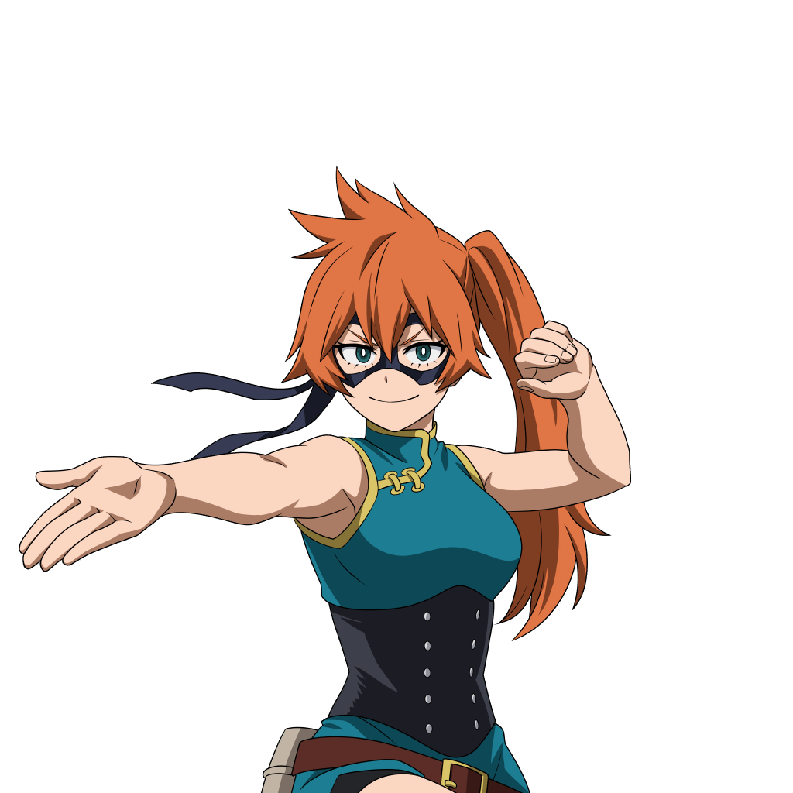

Su informacion principal
Nombre: Itsuka Kendo
Quirk: Puños Grandes
El uso de su Quirk le permite a Kendo agrandar sus manos a un tamaño gigantesco, incrementando la fuerza de las mismas.
Wiki con informacion mas detallada de KendoEl uso de su Quirk le permite a Kendo agrandar sus manos a un tamaño gigantesco, incrementando la fuerza de las mismas.
Wiki con informacion mas detallada de KendoLanza numerosas piedras con su mano gigante.
Técnica defensiva para protegerse de ataques enemigos con su mano gigante.
La barrera se desvanece tras recibir cierta cantidad de daño.
Ataque en pinza que atenaza al enemigo con sus manos gigantes.
Hace que agarres a tu compañero con tu mano y llevarlo mientras caminas.
Podras lanzarlo a una gran distancia pulsando de nuevo la habilidad.
| Habilidad | Daño | Cargas |
|---|---|---|
| Alpha | 28(PerBullet) | 8 |
| Beta | 0 | 100% |
| Gamma | 140 | 3 |
| Especial | 0 | 1 |